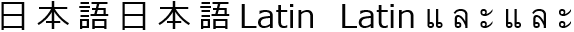
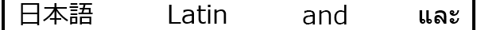
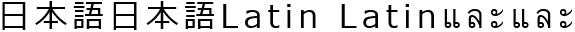

Abstract
This CSS3 module defines properties for text manipulation and
specifies their processing model. It covers line breaking, justification
and alignment, white space handling, and text
transformation.
Status of This Document
This section describes the status of this document at the time of
its publication. Other documents may supersede this document. A list of
current W3C publications and the latest revision of this technical report
can be found in the W3C technical reports
index at http://www.w3.org/TR/.
Publication as a Last Call Working Draft does not imply endorsement by the W3C
Membership. This is a draft document and may be updated, replaced or
obsoleted by other documents at any time. It is inappropriate to cite this
document as other than work in progress.
This CSS module has been produced as a combined effort of the W3C Internationalization Activity,
and the Style Activity and is maintained
by the CSS Working Group. It also
includes contributions made by participants in the XSL Working Group (members
only).
This document was produced by a group operating under the 5 February
2004 W3C Patent Policy. W3C maintains a public list of any patent disclosures made in
connection with the deliverables of the group; that page also includes
instructions for disclosing a patent. An individual who has actual
knowledge of a patent which the individual believes contains Essential
Claim(s) must disclose the information in accordance with section
6 of the W3C Patent Policy.
The following features are at risk and may be cut from the spec during
its CR period if there are no (correct) implementations:
- the ''full-width'' value of 'text-transform'
- the <length> values of the 'tab-size' property
- the ''start end'' value of 'text-align'
- the 'text-justify' property
- the percentage values of 'word-spacing'
- the 'hanging-punctuation' property
This specification is a Last Call Working Draft. All
persons are encouraged to review this document and send comments
to the www-style
mailing list as described below. The deadline for
comments is 7 November 2013.
Feedback on this draft should be posted to the
(archived)
public mailing list www-style@w3.org
(see instructions) with
[css-text] in the subject line.
You are strongly encouraged to complain if you see something stupid
in this draft. The editors will do their best to respond to all feedback.
Table of Contents
Introduction
This module describes the typesetting controls of CSS;
that is, the features of CSS that control the translation of
source text to formatted, line-wrapped text.
Various CSS properties provide control over
case transformation,
white space collapsing,
text wrapping,
line breaking rules
and hyphenation,
alignment and justification,
spacing,
and indentation.
Module Interactions
This module, together with [[CSS3-TEXT-DECOR]],
replaces and extends the text-level features defined in [[!CSS21]] chapter 16.
Values
This specification follows the
CSS property
definition conventions from [[!CSS21]]. Value types not defined in
this specification are defined in CSS Level 2 Revision 1 [[!CSS21]].
Other CSS modules may expand the definitions of these value types: for
example [[CSS3VAL]], when combined with this module, expands the
definition of the <length> value type as used in this specification.
In addition to the property-specific values listed in their definitions,
all properties defined in this specification also accept the
inherit
keyword as their property value. For readability it has not been repeated
explicitly.
Terminology
A grapheme cluster is what
a language user considers to be a character or a basic unit of the
script. The term is described in detail in the Unicode Technical
Report: Text Boundaries [[!UAX29]]. This specification uses the
extended grapheme cluster definition in [[!UAX29]] (not
the legacy grapheme cluster definition).
The UA may further tailor the definition as required by typographical tradition.
For example,
to properly letter-space the Thai word คำ (U+0E04 + U+0E33),
the U+0E33 needs to be decomposed into U+0E4D + U+0E32,
and then the extra letter-space inserted before the U+0E32: คํ า.
A slightly more complex example is น้ำ (U+0E19 + U+0E49 + U+0E33).
In this case, normal Thai shaping will first decompose the U+0E33 into U+0E4D + U+0E32
and then swap the U+0E4D with the U+0E49, giving U+0E19 + U+0E4D + U+0E49 + U+0E32.
As before the extra letter-space is then inserted before the U+0E32: นํ้ า.
Within this specification,
the ambiguous term character is used as a friendlier synonym
for grapheme cluster.
See Characters and Properties
for how to determine the Unicode properties of a character.
A letter for the purpose of this specification
is a character belonging to one of the Letter or Number general
categories in Unicode. [[!UAX44]]
The rendering characteristics of a character divided by an
element boundary is undefined: it may be rendered as belonging to
either side of the boundary, or as some approximation of belonging
to both. Authors are forewarned that dividing grapheme clusters by
element boundaries may give inconsistent or undesired results.
The content language of an element is the (human) language
the element is declared to be in, according to the rules of the
document language.
For example, the rules for determining the content language of an HTML
element use the lang attribute and are defined in [[HTML5]],
and the rules for determining the content language of an XML element use
the xml:lang attribute and are
defined in [[XML10]].
Note that it is possible for the content language of an element
to be unknown.
Other terminology and concepts used in this specification are defined
in [[!CSS21]] and [[!CSS3-WRITING-MODES]].
Case Transforms: the 'text-transform' property
| Name: |
text-transform |
| Value:
| none | capitalize | uppercase | lowercase | full-width
|
| Initial: |
none |
| Applies to: |
all elements |
| Inherited: |
yes |
| Percentages: |
N/A |
| Media: |
visual |
| Computed value: |
as specified |
| Animatable:
| no
|
| Canonical order:
| N/A
|
This property transforms text for styling purposes.
(It has no effect on the underlying content.)
Values have the following meanings:
- ''none''
- No effects.
- ''capitalize''
- Puts the first letter of each word in titlecase; other characters
are unaffected.
- ''uppercase''
- Puts all letters in uppercase.
- ''lowercase''
- Puts all letters in lowercase.
- ''full-width''
- Puts all characters in fullwidth form.
If the character does not have a corresponding fullwidth form,
it is left as is.
This value is typically used to typeset Latin characters and digits
like ideographic characters.
The definition of “word“ used for ''capitalize'' is UA-dependent;
[[!UAX29]] is suggested (but not required) for determining such word
boundaries. Authors should not expect ''capitalize'' to follow
language-specific titlecasing conventions (such as skipping articles
in English).
The following example converts the ASCII characters
used in abbreviations in Japanese text to their fullwidth variants
so that they lay out and line break like ideographs:
abbr:lang(ja) { text-transform: full-width; }
The case mapping rules for the character repertoire specified by the
Unicode Standard can be found on the Unicode Consortium Web site
[[!UNICODE]]. The UA must use the full case mappings for Unicode
characters, including any conditional casing rules, as defined in
Default Case Algorithm section. If (and only if) the content language
of the element is, according to the rules of the
document language,
known,
then any appropriate language-specific rules must be applied as well.
These minimally include, but are not limited to, the language-specific
rules in Unicode's
SpecialCasing.txt.
For example, in Turkish there are two “i”s, one with
a dot—“İ” and “i”— and one
without—“I” and “ı”. Thus the usual
case mappings between “I” and “i” are
replaced with a different set of mappings to their respective
undotted/dotted counterparts, which do not exist in English. This
mapping must only take effect if the content language is Turkish
(or another Turkic language that uses Turkish casing rules);
in other languages, the usual mapping of “I”
and “i” is required. This rule is thus conditionally
defined in Unicode's SpecialCasing.txt file.
The definition of fullwidth and halfwidth forms can be found on the
Unicode consortium web site at [[!UAX11]].
The mapping to fullwidth form is defined by taking code points with
the <wide> or the <narrow> tag
in their Decomposition_Mapping in [[!UAX44]].
For the <narrow> tag,
the mapping is from the code point to the decomposition (minus <narrow> tag),
and for the <wide> tag,
the mapping is from the decomposition (minus the <wide> tag)
back to the original code point.
Text transformation happens after white
space processing, which means that ''full-width'' only transforms
U+0020 spaces to U+3000 within preserved white spaces.
A future level of CSS may introduce the ability to create custom mapping
tables for less common text transforms, such as by an ''@text-transform''
rule similar to ''@counter-style'' from [[CSS-COUNTER-STYLES-3]].
White Space and Wrapping: the 'white-space' property
| Name: |
white-space |
| Value:
| normal | pre | nowrap | pre-wrap | pre-line |
| Initial: |
normal
|
| Applies to: |
all elements |
| Inherited: |
yes |
| Percentages: |
N/A |
| Media: |
visual |
| Computed value: |
as specified
|
| Animatable:
| no
|
| Canonical order:
| N/A
|
This property specifies two things:
- whether and how white space inside the element is collapsed
- whether lines may wrap at unforced soft wrap opportunities
Values have the following meanings, which must be interpreted
according to
the White Space Processing and
Line Breaking rules:
- ''normal''
- This value directs user agents to collapse sequences of white space
into a single character (or in some
cases, no character).
Lines may wrap at allowed soft wrap opportunities,
as determined by the line-breaking rules in effect,
in order to minimize inline-axis overflow.
- ''pre''
- This value prevents user agents from collapsing sequences of white space.
Segment breaks such as line feeds and carriage returns are preserved as forced line breaks.
Lines only break at forced line breaks;
content that does not fit within the block container overflows it.
- ''nowrap''
- Like ''normal'', this value collapses white space;
but like ''pre'', it does not allow wrapping.
- ''pre-wrap''
- Like ''pre'', this value preserves white space;
but like ''normal'', it allows wrapping.
- ''pre-line''
- Like ''normal'', this value collapses consecutive spaces and allows wrapping,
but preserves segment breaks in the source as forced line breaks.
The following informative table summarizes the behavior of various
'white-space' values:
|
New Lines |
Spaces and Tabs |
Text Wrapping |
| ''normal'' |
Collapse |
Collapse |
Wrap |
| ''pre'' |
Preserve |
Preserve |
No wrap |
| ''nowrap'' |
Collapse |
Collapse |
No wrap |
| ''pre-wrap'' |
Preserve |
Preserve |
Wrap |
| ''pre-line'' |
Preserve |
Collapse |
Wrap |
See White Space Processing Rules
for details on how white space collapses. An informative summary of
collapsing (''normal'' and ''nowrap'') is presented below:
- A sequence of segment breaks and other white space between two
Chinese, Japanese, or Yi characters collapses into nothing.
- A zero width space before or after a white space sequence
containing a segment break causes the entire sequence of white space
to collapse into a zero width space.
- Otherwise, consecutive white space collapses into a single space.
See Line Breaking
for details on wrapping behavior.
White Space Processing Details
The source text of a document often contains formatting
that is not relevant to the final rendering: for example,
breaking the source into segments (lines) for ease of editing
or adding white space characters such as tabs and spaces to indent the source code.
CSS white space processing allows the author to control interpretation of such formatting,
to preserve or collapse it away when rendering the document.
White space processing in CSS interprets white space characters only for rendering:
it has no effect on the underlying document data.
White space processing in CSS is controlled with the 'white-space' property.
CSS does not define document segmentation rules. Segments can be
separated by a particular newline seqence (such as a line feed or
CRLF pair), or delimited by some other mechanism, such as the SGML
RECORD-START and RECORD-END tokens.
For CSS processing, each document language–defined segment break,
CRLF sequence (U+000D U+000A), carriage return (U+000D), and line feed (U+000A)
in the text is treated as a segment break,
which is then interpreted for rendering as specified by the 'white-space' property.
Note that the document parser may have not only normalized
any segment breaks, but also collapsed other space characters or
otherwise processed white space according to markup rules. Because CSS
processing occurs after the parsing stage, it is not possible
to restore these characters for styling. Therefore, some of the
behavior specified below can be affected by these limitations and
may be user agent dependent.
Note that anonymous inlines consisting entirely of
collapsible white space are removed from the rendering tree.
See [[CSS21]] section
9.2.2.1
Control characters (Unicode class Cc) other than tab (U+0009), line feed
(U+000A), and carriage return (U+000D)
are ignored for the purpose of rendering.
The White Space Processing Rules
White space processing affects only spaces (U+0020), tabs (U+0009),
and segment breaks.
Phase I: Collapsing and Transformation
For each inline (including anonymous inlines) within an inline
formatting context, white space characters are handled as follows,
ignoring bidi formatting characters as if they were not there:
If 'white-space' is set to
''normal'', ''nowrap'', or ''pre-line'',
white space characters are considered collapsible
and are processed by performing the following steps:
- All spaces and tabs immediately preceding or following a segment
break are removed.
- Segment breaks are transformed for
rendering according to the segment break transformation rules.
- Every tab is converted to a space (U+0020).
- Any space immediately following another collapsible space—even
one outside the boundary of the inline containing that space,
provided they are both within the same inline formatting
context—is collapsed to have zero advance width. (It is
invisible, but retains its soft wrap opportunity, if any.)
If 'white-space' is set to ''pre-wrap'', any sequence of
spaces is treated as a sequence of non-breaking spaces. However,
a soft wrap opportunity exists at the end of the sequence.
Then, the entire block is rendered. Inlines are laid out, taking bidi
reordering into account, and wrapping as specified by the
'white-space' property.
The following example illustrates
the interaction of white-space collapsing and bidirectionality.
Consider the following markup fragment, taking special note of spaces
(with varied backgrounds and borders for emphasis and identification):
<ltr>A <rtl> B </rtl> C</ltr>
where the <ltr> element represents a left-to-right embedding
and the <rtl> element represents a right-to-left embedding.
If the 'white-space' property is set to ''normal'',
the white-space processing model would result in the following:
- The space before the B ( )
would collapse with the space after the A ( ).
- The space before the C ( )
would collapse with the space after the B ( ).
This would leave two spaces,
one after the A in the left-to-right embedding level,
and one after the B in the right-to-left embedding level.
This is then ordered according to the Unicode bidirectional algorithm,
with the end result being:
A BC
Note that there are two spaces between A and B,
and none between B and C.
This is best avoided by putting spaces outside the element
instead of just inside the opening and closing tags and, where practical,
by relying on implicit bidirectionality instead of explicit embedding levels.
When 'white-space' is ''pre'', ''pre-wrap'', or ''pre-line'',
segment breaks are not collapsible
and are instead transformed into a preserved line feed (U+000A).
For other values of 'white-space', segment breaks are collapsible,
and are either transformed into a space (U+0020) or removed
depending on the context before and after the break:
- If the character immediately before or immediately after the segment
break is the zero-width space character (U+200B), then the break
is removed, leaving behind the zero-width space.
- Otherwise, if the East Asian Width property [[!UAX11]] of both
the character before and after the line feed is F, W, or H (not A),
and neither side is Hangul, then the segment break is removed.
- Otherwise, the segment break is converted to a space (U+0020).
Note that the white space processing rules have already
removed any tabs and spaces after the segment break before these checks
take place.
Comments on how well this would work in practice would
be very much appreciated, particularly from people who work with
Thai and similar scripts.
Note that browser implementations do not currently follow these rules
(although IE does in some cases transform the break).
Phase II: Trimming and Positioning
As each line is laid out,
- A sequence of collapsible spaces at the beginning of a line is
removed.
- Each tab is rendered as a horizontal shift
that lines up the start edge of the next glyph with the next tab stop.
Tab stops occur at points that are multiples of the tab size
from the block's starting content edge.
The tab size is given by the 'tab-size' property.
- A sequence of collapsible spaces at the end of a line is removed.
- If spaces or tabs at the end of a line are non-collapsible but
have 'white-space' set to 'pre-wrap' the UA may visually
collapse their character advance widths.
White space that was not removed or collapsed during the white space
processing steps is called preserved white space.
Tab Character Size: the 'tab-size' property
| Name: |
tab-size |
| Value:
| <integer> | <length> |
| Initial: |
8 |
| Applies to: |
block containers |
| Inherited: |
yes |
| Percentages: |
N/A |
| Media: |
visual |
| Computed value: |
the specified integer or length made absolute |
| Animatable:
| as length
|
| Canonical order:
| N/A
|
This property determines the tab size used to render preserved tab characters (U+0009).
Integers represent the measure as multiples of the space character's advance width (U+0020).
Negative values are not allowed.
Line Breaking and Word Boundaries
When inline-level content is laid out into lines, it is broken across line boxes.
Such a break is called a line break.
When a line is broken due to explicit line-breaking controls,
or due to the start or end of a block,
it is a forced line break.
When a line is broken due to content wrapping
(i.e. when the UA creates unforced line breaks in order to fit the content within the measure),
it is a soft wrap break.
The process of breaking inline-level content into lines is called line breaking.
Wrapping is only performed at an allowed break point, called a soft wrap opportunity.
In most writing systems,
in the absence of hyphenation a soft wrap opportunity occurs only at word boundaries.
Many such systems use spaces or punctuation to explicitly separate words,
and soft wrap opportunities can be identified by these characters.
Scripts such as Thai, Lao, and Khmer, however,
do not use spaces or punctuation to separate words.
Although the zero width space (U+200B) can be used as an explicit word delimiter in these scripts,
this practice is not common.
As a result, a lexical resource is needed to correctly identify soft wrap opportunities in such texts.
In several other writing systems, (including Chinese, Japanese, Yi, and sometimes also Korean)
a soft wrap opportunity is based on syllable boundaries, not word boundaries.
In these systems a line can break anywhere except between certain character combinations.
Additionally the level of strictness in these restrictions can vary with the typesetting style.
CSS does not fully define where soft wrap opportunities occur,
however some controls are provided to distinguish common variations.
Further information on line breaking conventions can be found in
[[JLREQ]] and [[JIS4051]] for Japanese,
[[ZHMARK]] for Chinese, and
in [[!UAX14]] for all scripts in Unicode.
Any guidance for appropriate references here would be
much appreciated.
Line Breaking Details
When determining line breaks:
- Regardless of the 'white-space' value,
lines always break at each preserved forced break character:
for all values, line-breaking behavior defined for
the BK, CR, LF, CM, NL, and SG line breaking classes in [[!UAX14]]
must be honored.
- When 'white-space' allows wrapping,
line breaking behavior defined for the WJ, ZW, and GL line-breaking classes in [[!UAX14]]
must be honored.
- UAs that allow wrapping at punctuation other than spaces should prioritize breakpoints.
For example, if breaks after slashes are given a lower priority than spaces,
the sequence "check /etc" will never break between the '/' and the 'e'.
The UA may use the width of the containing block, the text's language,
and other factors in assigning priorities.
As long as care is taken to avoid such awkward breaks, allowing breaks at
appropriate punctuation other than spaces is recommended, as it results
in more even-looking margins, particularly in narrow measures.
- Out-of-flow elements do not introduce a forced line break
or soft wrap opportunity in the flow.
- The line breaking behavior of a replaced element or other atomic inline
is equivalent to that of the Object Replacement Character (U+FFFC).
- For soft wrap opportunities created by characters that disappear at the line break (e.g. U+0020 SPACE),
properties on the element containing that character control the line breaking at that opportunity.
For soft wrap opportunities defined by the boundary between two characters,
the properties on the element containing the boundary control breaking.
- For soft wrap opportunities before the first or after the last character of a box,
the break occurs immediately before/after the box (at its margin edge)
rather than breaking the box between its content edge and the content.
- For line breaking in/around ruby,
the base text is considered part of the same inline formatting context as its surrounding content,
but the ruby text is not:
i.e. line breaking opportunities between the ruby element and its surrounding content
are determined as if the ruby base were inline and the ruby text were not there.
Breaking Rules for Punctuation: the 'line-break' property
| Name: |
line-break |
| Value:
| auto | loose | normal | strict |
| Initial: |
auto |
| Applies to: |
all elements |
| Inherited: |
yes |
| Percentages: |
N/A |
| Media: |
visual |
| Computed value: |
specified value |
| Animatable:
| no
|
| Canonical order:
| N/A
|
This property specifies the strictness of line-breaking rules applied
within an element:
particularly how wrapping interacts with punctuation and symbols.
Values have the following meanings:
- ''auto''
- The UA determines the set of line-breaking restrictions to use,
and it may vary the restrictions based on the length of the line; e.g.,
use a less restrictive set of line-break rules for short lines.
- ''loose''
- Breaks text using the least restrictive set of line-breaking
rules. Typically used for short lines, such as in newspapers.
- ''normal''
- Breaks text using the most common set of line-breaking rules.
- ''strict''
- Breaks text using the most stringent set of line-breaking
rules.
The rules here are following guidelines from KLREQ for Korean,
which don't allow the Chinese/Japanese-specific breaks.
However, the resulting behavior could use some review and feedback to make sure they are correct,
particularly when “word basis” breaking is used (''word-break: keep-all'') in Korean.
CSS distinguishes between three levels of strictness in the rules for
text wrapping.
The precise set of rules in effect for each level is up to the UA
and should follow language conventions.
However, this specification does require that:
- Following breaks be forbidden in ''strict'' line breaking and
allowed in ''normal'' and ''loose'':
- breaks before Japanese small kana or the Katakana-Hiragana prolonged sound mark:
i.e. characters with the Unicode Line Break property
CJ.
(See LineBreak.txt in [[!UNICODE]].)
If the content language is Chinese or Japanese,
then additionally allow (but otherwise forbid) for ''normal'' and ''loose'':
- breaks before hyphens:
‐ U+2010, – U+2013, 〜 U+301C,
゠ U+30A0
- Following breaks be forbidden in ''normal'' and ''strict'' line
breaking and allowed in ''loose'':
- breaks before iteration marks:
々 U+3005, 〻 U+303B, ゝ U+309D,
ゞ U+309E, ヽ U+30FD, ヾ U+30FE
- breaks between inseparable characters
such as ‥ U+2025, … U+2026
i.e. characters with the Unicode Line Break property
IN.
(See LineBreak.txt in [[!UNICODE]].)
If the content language is Chinese or Japanese,
then additionally allow (but otherwise forbid) for ''loose'':
- breaks before certain centered punctuation marks:
: U+003A, ; U+003B, ・ U+30FB,
： U+FF1A, ； U+FF1B, ･ U+FF65,
! U+0021, ? U+003F, ‼ U+203C,
⁇ U+2047, ⁈ U+2048, ⁉ U+2049,
！ U+FF01, ？ U+FF1F
- breaks before suffixes:
% U+0025, ¢ U+00A2, ° U+00B0,
‰ U+2030, ′ U+2032, ″ U+2033,
℃ U+2103, ％ U+FF05, ￠ U+FFE0
- breaks after prefixes:
№ U+2116
and all currency symbols (Unicode general category Sc) other than
¢ U+00A2 and ￠ U+FFE0
In the recommended list above, no distinction is made among the levels of
strictness in non-CJK text: only CJK codepoints are affected, unless
the text is marked as Chinese or Japanese, in which case some additional
common codepoints are affected. However a future level of CSS may add
behaviors affecting non-CJK text.
The CSSWG recognizes that in a future edition of the
specification finer control over line breaking may be necessary to
satisfy high-end publishing requirements.
Breaking Rules for Letters: the 'word-break' property
| Name: |
word-break |
| Value:
| normal | keep-all | break-all |
| Initial: |
normal |
| Applies to: |
all elements |
| Inherited: |
yes |
| Percentages: |
N/A |
| Media: |
visual |
| Computed value: |
specified value |
| Animatable:
| no
|
| Canonical order:
| N/A
|
This property specifies soft wrap opportunities between letters,
i.e. where it is “normal” and permissible to break lines of text.
For example, in some styles of CJK typesetting, English words are allowed
to break between any two letters, rather than only at spaces or hyphenation points;
this can be enabled with ''word-break:break-all''.
As another example, Korean has two styles of line-breaking:
between any two Korean syllables (''word-break: normal'')
or, like English, mainly at spaces (''word-break: keep-all'').
각 줄의 마지막에 한글이 올 때 줄 나눔 기 /* break between syllables */
준을 “글자” 또는 “어절” 단위로 한다.
각 줄의 마지막에 한글이 올 때 줄 나눔 /* break only at spaces */
기준을 “글자” 또는 “어절” 단위로 한다.
To enable additional break opportunities only in the case of overflow,
see 'overflow-wrap'.
Values have the following meanings:
- ''normal''
- Words break according to their usual rules.
- ''break-all''
- In addition to ''normal'' soft wrap opportunities,
lines may break between any two letters
(except where forbidden by the 'line-break' property).
Hyphenation is not applied. This option is used mostly in a context where
the text is predominantly using CJK characters with few non-CJK excerpts
and it is desired that the text be better distributed on each line.
- ''keep-all''
-
Implicit soft wrap opportunities between letters are suppressed,
i.e. breaks are prohibited between pairs of letters
(including those explicitly allowed by 'line-break')
except where opportunities exist due to dictionary-based breaking.
Otherwise this option is equivalent to ''normal''.
In this style, sequences of CJK characters do not break.
This is sometimes seen in Korean (which uses spaces between words),
and is also useful for mixed-script text where CJK snippets are mixed
into another language that uses spaces for separation.
Symbols that line-break the same way as letters of a particular category
are affected the same way as those letters.
Here's a mixed-script sample text:
这是一些汉字, and some Latin, و کمی نوشتنن عربی, และตัวอย่างการเขียนภาษาไทย.
The break-points are determined as follows (indicated by ‘·’):
- ''word-break: normal''
-
这·是·一·些·汉·字,·and·some·Latin,·و·کمی·نوشتنن·عربی·และ·ตัวอย่าง·การเขียน·ภาษาไทย.
- ''word-break: break-all''
-
这·是·一·些·汉·字,·a·n·d·s·o·m·e·L·a·t·i·n,·و·ﮐ·ﻤ·ﻰ·ﻧ·ﻮ·ﺷ·ﺘ·ﻦ·ﻋ·ﺮ·ﺑ·ﻰ,·แ·ล·ะ·ตั·ว·อ·ย่·า·ง·ก·า·ร·เ·ขี·ย·น·ภ·า·ษ·า·ไ·ท·ย.
- ''word-break: keep-all''
-
这是一些汉字,·and·some·Latin,·و·کمی·نوشتنن·عربی,·และตัวอย่างการเขียนภาษาไทย.
When shaping scripts such as Arabic are allowed to break within words
due to ''break-all'', the characters must still be shaped as if the
word were not broken.
Breaking Within Words
Hyphenation
allows the controlled splitting of words
to improve the layout of paragraphs,
typically splitting words at syllabic or morphemic boundaries
and visually indicating the split (usually by inserting a hyphen, U+2010).
In some cases, hyphenation may also alter the spelling of a word.
Regardless, hyphenation is a rendering effect only:
it must have no effect on the underlying document content
or on text selection or searching.
Hyphenation occurs when the line breaks at a valid hyphenation opportunity,
which creates a soft wrap opportunity within the word.
In CSS it is controlled with the 'hyphens' property.
CSS Text Level 3 does not define the exact rules for hyphenation,
however UAs are strongly encouraged to optimize their line-breaking implementation
to choose good break points and appropriate hyphenation points.
Hyphenation opportunities are considered when calculating
''min-content'' intrinsic sizes.
CSS also provides the 'overflow-wrap' property, which can allow
arbitrary breaking within words when the text would otherwise overflow
its container.
Hyphenation Control: the 'hyphens' property
| Name:
| hyphens
|
| Value:
| none | manual | auto
|
| Initial:
| manual
|
| Applies to:
| all elements
|
| Inherited:
| yes
|
| Percentages:
| N/A
|
| Media:
| visual
|
| Computed value:
| specified value
|
| Animatable:
| no
|
| Canonical order:
| N/A
|
This property controls whether hyphenation is allowed to create more
soft wrap opportunities within a line of text.
Values have the following meanings:
- ''none''
- Words are not hyphenated, even if characters inside
the word explicitly define hyphenation opportunities.
- ''manual''
- Words are only hyphenated where there are characters inside the word
that explicitly suggest hyphenation opportunities.
In Unicode, U+00AD is a conditional "soft hyphen" and U+2010 is an
unconditional hyphen. Unicode Standard Annex #14 describes the
role of soft hyphens in
Unicode line breaking. [[!UAX14]]
In HTML, ­ represents the soft hyphen character which
suggests a hyphenation opportunity.
ex­ample
- ''auto''
- Words may be broken at appropriate hyphenation points either
as determined by hyphenation characters inside the word or
as determined automatically by a language-appropriate hyphenation resource.
Conditional hyphenation characters inside a word, if present,
suppress the use of automatic resources
when determining hyphenation opportunities within the word.
Correct automatic hyphenation requires a hyphenation resource
appropriate to the language of the text being broken. The UA is
therefore only required to automatically hyphenate text for which
the author has declared a language (e.g. via HTML lang
or XML xml:lang) and for which it has an appropriate
hyphenation resource.
When shaping scripts such as Arabic are allowed to break within words
due to hyphenation, the characters must still be shaped as if the word
were not broken.
For example, if the word “نوشتن”
were hyphenated, it would appear as “ﻧﻮﺷ-ﺘﻦ”
not as “ﻧﻮﺵ-ﺗﻦ”.
Overflow Wrapping: the 'overflow-wrap'/'word-wrap' property
| Name: |
overflow-wrap/word-wrap |
| Value:
| normal | break-word |
| Initial: |
normal |
| Applies to: |
all elements |
| Inherited: |
yes |
| Percentages: |
N/A |
| Media: |
visual |
| Computed value: |
specified value |
| Animatable:
| no
|
| Canonical order:
| N/A
|
This property specifies whether the UA may arbitrarily break within a word
to prevent overflow when an otherwise-unbreakable string is too
long to fit within the line box. It only has an effect when
'white-space' allows wrapping. Possible values:
- ''normal''
- Lines may break only at allowed break points. However, the restrictions
introduced by ''word-break: keep-all'' may be relaxed to match ''word-break: normal''
if there are no otherwise-acceptable break points in the line.
- ''break-word''
- An unbreakable "word" may be broken at an arbitrary point if
there are no otherwise-acceptable break points in the line.
Shaping characters are still shaped as if the word were not
broken, and grapheme clusters must stay together as one unit.
No hyphenation character is inserted at the break point.
Soft wrap opportunities introduced by ''overflow-wrap: break-word''
are not considered when calculating ''min-content'' intrinsic sizes.
For legacy reasons, UAs must treat 'word-wrap' as an alternate name
for the 'overflow-wrap' property, as if it were a shorthand of 'overflow-wrap'.
Alignment and Justification
Alignment and justification controls how inline content is distributed within a line box.
There's a proposal for 'text-align' to become a shorthand for 'text-align-last' and 'text-align-all'.
This has the advantage that 'text-align-last' can be set in a single declaration with 'text-align',
e.g. ''text-align: justify-all'' (justify align all lines) or ''text-align: justify center'' (justify all lines except center last line).
It has the disadvantage of creating the 'text-align-all' property.
There are also some cascading considerations:
if 'text-align-last' is part of the shorthand, then any declaration of 'text-align' will reset it;
it's unclear if this is an advantage or a disadvantage.
The CSSWG has no strong opinion on this issue, and solicits feedback from others.
We unfortunately can't drop 'text-align-last' in favor of an expanded value set in 'text-align'
because of existing content and implementations.
However, because authors have a pattern of typing 'text-align-last' after 'text-align',
we can change their interaction without breaking content.
Text Alignment: the 'text-align' property
| Name: |
text-align |
| Value:
| start | end | left | right | center |
justify | match-parent | start end
|
| Initial: |
start |
| Applies to: |
block containers |
| Inherited: |
yes |
| Percentages: |
N/A |
| Media: |
visual |
| Computed value: |
specified value, except for 'match-parent' which computes as defined below |
| Animatable:
| no
|
| Canonical order:
| N/A
|
This property describes how the inline-level content of a block
is aligned along the inline axis
if the content does not completely fill the line box.
Values have the following meanings:
- ''start''
- Inline-level content is aligned to the start edge of the line box.
- ''end''
- Inline-level content is aligned to the end edge of the line box.
- ''left''
- Inline-level content is aligned to the
line left
edge of the line box.
(In vertical writing modes,
this will be either the physical top or bottom,
depending on 'text-orientation'.) [[CSS3-WRITING-MODES]]
- ''right''
- Inline-level content is aligned to the
line right
edge of the line box.
(In vertical writing modes,
this will be either the physical top or bottom,
depending on 'text-orientation'.) [[CSS3-WRITING-MODES]]
- ''center''
- Inline-level content is centered within the line box.
- ''justify''
- Text is justified according to the method specified by the 'text-justify' property,
in order to exactly fill the line box.
- ''match-parent''
- This value behaves the same as 'inherit'
(computes to its parent's computed value)
except that an inherited 'start' or 'end' keyword
is interpreted against its parent's 'direction' value
and results in a computed value of either 'left' or 'right'.
- ''start end''
- Specifies ''start'' alignment of the first line and any line
immediately after a forced line break;
and ''end'' alignment of any remaining lines.
This value will be removed at the end of the LC period unless someone comes up with a more understandable keyword to replace it with.
A block of text is a stack of
line boxes.
This property specifies how the inline-level boxes within each line box
align with respect to the start and end sides of the line box.
Alignment is not with respect to the
viewport
or containing block.
In the case of ''justify'', the UA may stretch or shrink any inline boxes
by adjusting their text. (See 'text-justify'.)
If an element's white space is not collapsible,
then the UA is not required to adjust its text for the purpose of justification
and may instead treat the text as having no expansion opportunities.
If the UA chooses to adjust the text, then it must ensure
that tab stops continue to line up as required by the
white space processing rules.
If (after justification, if any) the inline contents of a line box are too long to fit within it,
then the contents are start-aligned:
any content that doesn't fit overflows the line box's end edge.
See Bidirectionality and line boxes
for details on how to determine the start and end edges of a line box.
Last Line Alignment: the 'text-align-last' property
| Name: |
text-align-last |
| Value:
| auto | start | end | left | right | center | justify
|
| Initial: |
auto |
| Applies to: |
block containers |
| Inherited: |
yes |
| Percentages: |
N/A |
| Media: |
visual |
| Computed value: |
specified value |
| Animatable:
| no
|
| Canonical order:
| N/A
|
This property describes how the last line of a block or a line
right before a forced line break is aligned
when 'text-align' is ''justify''.
If a line is also the first line of the block
or the first line after a forced line break,
then, unless 'text-align' assigns an explicit first line alignment (via ''start end''),
'text-align-last' takes precedence over 'text-align'.
If ''auto'' is specified, content on the affected line is aligned
per 'text-align' unless 'text-align' is set to ''justify''. In
this case, content is justified if 'text-justify' is ''distribute''
and start-aligned otherwise.
All other values have the same meanings as in 'text-align'.
Justification Method: the 'text-justify' property
| Name: |
text-justify |
| Value:
| auto | none | inter-word | distribute
|
| Initial: |
auto |
| Applies to: |
block containers and, optionally, inline elements |
| Inherited: |
yes |
| Percentages: |
N/A |
| Media: |
visual |
| Computed value: |
specified value |
| Animatable:
| no
|
| Canonical order:
| N/A
|
This property selects the justification method used when a line's
alignment is set to ''justify'' (see 'text-align').
The property applies to block containers, but the UA may (but
is not required to) also support it on inline elements.
It takes the following values:
- ''auto''
- The UA determines the justification algorithm to follow, based
on a balance between performance and adequate presentation quality.
One possible algorithm is to choose the appropriate justification behavior
based on the language of the paragraph
e.g. following [[JLREQ]] for Japanese,
using cursive elongation for Arabic,
using ''inter-word'' for English,
etc.
Another possibility is to use a justification method that is a
simple universal compromise for all writing systems,
such as primarily expanding word separators
along with secondarily expanding between CJK and Southeast Asian letters.

An example of cursively-justified Arabic text rendered by Tasmeem.

Mixed-script text with ''text-justify: auto'':
this interpretation uses a universal-compromise justification method,
expanding at spaces as well as between CJK and Southeast Asian letters.
- ''none''
- Justification is disabled: there are no expansion opportunities within the text.
This value is intended for use in user stylesheets
to improve readability or for accessibility purposes.
- ''inter-word''
- Justification adjusts spacing at word separators only
(effectively varying the used 'word-spacing' on the line).
This behavior is typical for languages that separate words using spaces,
like English or Korean.

Mixed-script text with ''text-justify: inter-word''
- ''distribute''
- Justification adjusts spacing between each pair of adjacent characters
(effectively varying the used 'letter-spacing' on the line).
This value is sometimes used in e.g. Japanese.

Mixed-script text with ''text-justify: distribute''
The exact justification algorithm is UA-dependent;
however, CSS provides some general guidelines.
Expanding and Compressing Text
When justifying text, the user agent takes the remaining space between
the ends of a line's contents and the edges of its line box, and
distributes that space throughout its contents so that the contents
exactly fill the line box.
The user agent may alternatively distribute negative space,
putting more content on the line than would otherwise fit under normal spacing conditions.
An expansion opportunity is
a point where the justification algorithm may alter spacing within the text.
An expansion opportunity can be provided by a single character
(such as a word separator),
or by the juxtaposition of two characters.
Space distributed by justification is in addition to
the spacing defined by the 'letter-spacing' or 'word-spacing' properties.
However, when space is distributed to a word separator expansion opportunity,
it is applied under the same rules as for 'word-spacing'.
Similarly, when space is distributed an expansion opportunity between two characters,
it is applied under the same rules as for 'letter-spacing'.
A justification algorithm may divide expansion opportunities into different priority levels.
All expansion opportunities within a given level
are expanded or compressed at the same priority,
regardless of which characters created that opportunity.
For example, if expansion opportunities between two Han characters
and between two Latin letters are defined to be at the same level
(as they are in the ''distribute'' justification style),
they are not treated differently because they originate from different characters.
It is not defined in this level
whether or how other factors
(such as font size, letter-spacing, glyph shape, position within the line, etc.)
may influence the distribution of space to expansion opportunities within the line.
Handling Symbols and Punctuation
When determining expansion opportunities,
a character from the Unicode Symbols (S*) and Punctuation (P*) classes
are generally treated the same as a letter:
in the case of ''inter-word'', as a Latin letter;
in the case of ''distribute'', as a Han letter;
and in the case of ''auto'', as a letter of the dominant script.
However, by typographic tradition there may be additional rules
controlling the justification of symbols and punctuation.
Therefore, the UA may reassign specific characters
or introduce additional levels of prioritization
to handle expansion opportunities involving symbols and punctuation.
For example, there are traditionally no expansion opportunities
between consecutive EM DASH U+2014, HORIZONTAL BAR U+2015, HORIZONTAL
ELLIPSIS U+2026, or TWO DOT LEADER U+2025 characters [[JLREQ]]; thus
a UA might assign these characters to a “never” prioritization level.
As another example, certain fullwidth punctuation characters are
considered to contain an expansion opportunity in Japanese.
The UA might therefore assign these characters to a higher prioritization
level than the opportunities between ideographic characters.
Unexpandable Text
If the inline contents of a line cannot be stretched to the full width of the line box,
then they must be aligned as specified by the 'text-align-last' property.
(If 'text-align-last' is ''justify'', then
they must be aligned as for ''center'' if 'text-justify' is ''distribute'',
and as ''start'' otherwise.)
Cursive Scripts
Justification must not introduce gaps between letters
of cursive scripts such as Arabic.
If it is able, the UA may
translate space distributed to expansion opportunities within a run of such letters
into some form of cursive elongation for that run.
It otherwise must assume that no expansion opportunity exists
between any pair of cursive script letters.
Possible Algorithms
The guidelines in this level of CSS do not describe a complete
justification algorithm. They are merely a minimum set of requirements
that a complete algorithm should meet. Limiting the set of requirements
gives UAs some latitude in choosing a justification algorithm that
meets their needs and desired balance of quality, speed, and complexity.
For instance, a basic but fast justification algorithm
might use a simple greedy method for determining line breaks,
then distribute leftover space.
This algorithm could follow the guidelines by expanding word spaces first,
expanding between letters only if the spaces between words hit a limit defined by the UA.
A more sophisticated but harder-to-implement justification algorithm
might use a Knuth/Plass method
where expansion opportunities and limits were assigned weights
and assessed with other line breaking considerations.
This algorithm could follow the guidelines by giving more weight
to word separators than letter spacing.
A UA can also tailor its justification rules by language,
to produce results more closely aligned to the typography of that language.
For example, it's not defined whether expansion or compression is preferred,
so a UA may, for example, bias towards compression for CJK languages
but towards expansion for Western alphabetic languages.
As another example,
3.8 Line Adjustment in [[JLREQ]] gives an example of a set of rules for
how a text formatter can justify Japanese text.
A UA could use this algorithm when the 'text-justify' property is ''auto''.
However, since the rules described in the document specifically target Japanese,
they may produce non-optimal results
when used to justify other languages such as English.
The UA could adapt the rules to accommodate other scripts by, for instance,
omitting the rule to compress half-width spaces (rule a. of 3.8.3).
Or it could keep the rule, but only enable it when the content language is known to be Japanese.
The UA may enable or break optional ligatures or use other font features
such as alternate glyphs or glyph compression
to help justify the text under any method.
This behavior is not controlled by this level of CSS.
However, UAs must not break required ligatures
or otherwise disable features required to correctly shape complex scripts.
Spacing
CSS offers control over text spacing
via the 'word-spacing' and 'letter-spacing' properties, which specify additional space
around word separators or between characters, respectively.
The 'word-spacing' property can now be specified in percentages,
making it possible to, for example, double or eliminate word spacing.
In the following example, word spacing is halved,
but may expand if needed for text justification.
p { word-spacing: -50%; }
Word Spacing: the 'word-spacing' property
| Name:
| word-spacing
|
| Value:
| [ normal | <length> | <percentage>]
|
| Initial:
| normal
|
| Applies to:
| all elements
|
| Inherited:
| yes
|
| Percentages:
| refers to width of the affected glyph
|
| Media:
| visual
|
| Computed value:
| an absolute length
|
| Animatable:
| as length, percentage, or calc
|
| Canonical order:
| N/A
|
This property specifies additional spacing
between “words”.
Missing values are assumed to be ''normal''.
Values are interpreted as defined below:
- ''normal''
- No additional spacing is applied.
Computes to zero.
- ''<length>''
- Specifies extra spacing in addition to
the intrinsic inter-word spacing defined by the font.
- ''<percentage>''
- Specifies the additional spacing as a percentage of the affected
character's advance measure.
Additional spacing is applied to each word separator
left in the text after the white space processing rules have been applied,
and should be applied half on each side of the character
unless otherwise dictated by typographic tradition.
Values may be negative, but there may be implementation-dependent limits.
The following example will make all the spaces between words in Arabic
be rendered as zero-width, and double the width of each space in English:
:lang(ar) { word-spacing: -100%; }
:lang(en) { word-spacing: 100%; }
The following example will add half the the width of the
“0” glyph to word spacing character [[CSS3VAL]]:
p { word-spacing: 0.5ch; }
Word-separator characters
are characters whose purpose and general usage is to separate words.
In [UNICODE] this includes
the space (U+0020), the no-break space (U+00A0), the Ethiopic word space (U+1361),
the Aegean word separators (U+10100,U+10101), the Ugaritic word divider (U+1039F),
and the Phoenician Word Separator (U+1091F).
If there are no word-separator characters, or if a word-separating
character has a zero advance width (such as the zero width space U+200B)
then the user agent must not create an additional spacing between words.
General punctuation and fixed-width spaces (such as U+3000 and U+2000
through U+200A) are not considered word-separator characters.
Tracking: the 'letter-spacing' property
| Name: |
letter-spacing |
| Value:
| normal | <length>
|
| Initial: |
normal |
| Applies to: |
all elements |
| Inherited: |
yes |
| Percentages: |
N/A |
| Media: |
visual |
| Computed value: |
an absolute length
|
| Animatable:
| as length
|
| Canonical order:
| N/A
|
This property specifies additional spacing between adjacent characters
(commonly called tracking).
Letter-spacing is applied after
bidi reordering
and is in addition to any 'word-spacing'.
Depending on the justification rules in effect,
user agents may further increase or decrease the space between characters
in order to justify text.
Values have the following meanings:
- ''normal''
- No additional spacing is applied. Computes to zero.
- ''<length>''
- Specifies additional spacing between characters.
Values may be negative, but there may be implementation-dependent limits.
For the purpose of 'letter-spacing', each consecutive run of atomic
inlines (such as images and inline blocks) is treated as a single
character.
Letter-spacing must not be applied at the beginning or at the end of a line.
Because letter-spacing is not applied at the beginning or end of a line,
text always fits flush with the edge of the block.
p { letter-spacing: 1em; }
<p>abc</p>
a b c
a b c
UAs therefore must not append letter spacing to the right or trailing edge of a line:
a b c
Letter spacing between two characters effectively “belongs”
to the innermost element element that contains the two characters:
the total letter spacing between two adjacent characters (after bidi reordering)
is specified by and rendered within
the innermost element that contains the boundary between the two characters.
A given value of 'letter-spacing' only affects the spacing
between characters completely contained within the element for which it is specified:
p { letter-spacing: 1em; }
span { letter-spacing: 2em; }
<p>a<span>bb</span>c</p>
a b b c
This also means that applying 'letter-spacing' to
an element containing only a single character
has no effect on the rendered result:
p { letter-spacing: 1em; }
span { letter-spacing: 2em; }
<p>a<span>b</span>c</p>
a b c
An inline box only includes
letter spacing between characters completely contained within that element:
p { letter-spacing: 1em; }
<p>a<span>bb</span>c</p>
a b b c
It is incorrect to include the letter spacing on the right or trailing edge of the element:
a b b c
Letter spacing is inserted after RTL reordering,
so the letter spacing applied to the inner span below has no effect,
since after reordering the 'c' doesn't end up next to 'א':
p { letter-spacing: 1em; }
span { letter-spacing: 2em; }
<!-- abc followed by Hebrew letters alef (א), bet (ב) and gimel (ג) -->
<!-- Reordering will display these in reverse order. -->
<p>ab<span>cא</span>בג</p>
a b c א ב ג
Letter-spacing ignores invisible zero-width formatting characters
(such as those from the Unicode Cf category).
Spacing must be added as if those characters did not exist in the document.
For example, 'letter-spacing' applied to
A&zwsp;B is identical to AB,
regardless of where any element boundaries might fall.
When the effective letter-spacing between two characters is not zero
(due to either justification
or non-zero computed 'letter-spacing'),
user agents should not apply optional ligatures.
For example, if the word “filial” is letter-spaced,
an “fi” ligature should not be used
as it will prevent even spacing of the text.
If it is able, the UA may apply letter-spacing to cursive scripts
by translating the total spacing distributed to a run of such letters
into some form of cursive elongation for that run.
Otherwise, if the UA cannot expand text from a cursive script
without breaking its cursive connections,
it must not apply spacing
between any pair of that script's letters at all.
In some scripts such as Thai or Lao,
the UA may apply the additional spacing within a character sometimes along with decompositions.
In other scripts such as Myanmar,
the UA may disallow applying the additional spacing between a specific pair of characters such as within a syllable.
Edge Effects
Edge effects control
the indentation of lines with respect to other lines in the block ('text-indent')
and how content is measured at the start and end edges of a line ('hanging-punctuation').
First Line Indentation: the 'text-indent' property
| Name: |
text-indent |
| Value:
| [ <length>
| <percentage>
] && hanging? && each-line?
|
| Initial: |
0 |
| Applies to: |
block containers |
| Inherited: |
yes |
| Percentages: |
refers to width of containing block |
| Media: |
visual |
| Computed value: |
the percentage as specified or the absolute length,
plus any keywords as specified
|
| Animatable:
| as length, percentage, or calc, but only if keywords match
|
| Canonical order:
| per grammar
|
This property specifies the indentation applied to lines of inline
content in a block. The indent is treated as a margin applied to
the start edge of the line box.
Unless otherwise specified by the ''each-line'' and/or ''hanging'' keywords,
only lines that are the
first formatted line [[!CSS21]]
of an element are affected.
For example, the first line of an anonymous block box is only affected
if it is the first child of its parent element.
Values have the following meanings:
- ''<length>''
- Gives the amount of the indent as an absolute length.
- ''<percentage>''
- Gives the amount of the indent as a percentage of the containing
block's logical width.
- ''each-line''
- Indentation affects the first line of each block container
and each line after a forced line break
(but not lines after a soft wrap break).
- ''hanging''
- Inverts which lines are affected.
If 'text-align' is 'start' and 'text-indent' is '5em' in
left-to-right text with no floats present, then first line of text
will start 5em into the block:
Since CSS1 it has been possible
to indent the first line of a block
element using the 'text-indent'
property.
Note that since the 'text-indent' property inherits,
when specified on a block element, it will affect descendant
inline-block elements.
For this reason, it is often wise to specify 'text-indent: 0' on
elements that are specified 'display: inline-block'.
Hanging Punctuation: the 'hanging-punctuation' property
| Name: |
hanging-punctuation |
| Value:
| none | [ first || [ force-end | allow-end ] || last ]
|
| Initial: |
none |
| Applies to: |
inline elements |
| Inherited: |
yes |
| Percentages: |
N/A |
| Media: |
visual |
| Computed value: |
as specified |
| Animatable:
| no
|
| Canonical order:
| per grammar
|
This property determines whether a punctuation mark, if one is present,
hangs and may be placed outside the line box (or in the indent)
at the start or at the end of a line of text.
Note that if there is not sufficient padding on the
block container, 'hanging-punctuation' can trigger overflow.
When a punctuation mark hangs, it is not considered
when measuring the line's contents for fit, alignment, or justification.
Depending on the line's alignment, this may (or may not)
result in the mark being placed outside the line box.
Values have the following meanings:
- ''none''
- No character hangs.
- ''first''
- An opening bracket or quote at the start of the
first
formatted line of an element hangs.
This applies to all characters in the Unicode categories Ps, Pf, Pi.
- ''last''
- A closing bracket or quote at the end of the
last formatted line of an element hangs.
This applies to all characters in the Unicode categories Pe, Pf, Pi.
- ''force-end''
- A stop or comma at the end of a line hangs.
- ''allow-end''
- A stop or comma at the end of a line hangs if it
does not otherwise fit prior to justification.
Non-zero start and end borders/padding between
a hangeable mark and the edge of the line prevent the mark from hanging.
For example, a period at the end of an inline box with end padding
does not hang at the end edge of a line.
At most one punctuation character may hang at each edge of the line.
A hanging punctuation mark is still enclosed inside its inline box
and participates in text justification:
its character advance width is just not measured when determining
how much content fits on the line,
how much the line's contents need to be expanded or compressed for justification,
or how to position the content within the line box for text alignment.
Stops and commas allowed to hang include:
| U+002C | , | COMMA
|
| U+002E | . | FULL STOP
|
| U+060C | ، | ARABIC COMMA
|
| U+06D4 | ۔ | ARABIC FULL STOP
|
| U+3001 | 、 | IDEOGRAPHIC COMMA
|
| U+3002 | 。 | IDEOGRAPHIC FULL STOP
|
| U+FF0C | ， | FULLWIDTH COMMA
|
| U+FF0E | ． | FULLWIDTH FULL STOP
|
| U+FE50 | ﹐ | SMALL COMMA
|
| U+FE51 | ﹑ | SMALL IDEOGRAPHIC COMMA
|
| U+FE52 | ﹒ | SMALL FULL STOP
|
| U+FF61 | ｡ | HALFWIDTH IDEOGRAPHIC FULL STOP
|
| U+FF64 | ､ | HALFWIDTH IDEOGRAPHIC COMMA
|
The UA may include other characters as appropriate.
The CSS Working Group would appreciate if UAs including
other characters would inform the working group
of such additions.
The ''allow-end'' and ''force-end'' are two variations of
hanging punctuation used in East Asia.
p {
text-align: justify;
hanging-punctuation: allow-end;
}
p {
text-align: justify;
hanging-punctuation: force-end;
}
The punctuation at the end of the first line for ''allow-end''
does not hang, because it fits without hanging.
However, if ''force-end'' is used, it is forced to hang.
The justification measures the line without the hanging punctuation.
Therefore when the line is expanded, the punctuation is pushed outside the line.
Bidirectionality and Line Boxes
The start
and end edges
of a line box are determined by the inline base direction of the line box.
In most cases, this is given by its containing block's computed 'direction'.
However if its containing block has ''unicode-bidi: plaintext'' [[!CSS3-WRITING-MODES]],
the line box's inline base direction must be determined
by the base direction of the bidi paragraph to which it belongs:
that is, the bidi paragraph for which the line box holds content.
An empty line box
(i.e. one that contains no atomic inlines or
characters other than the line-breaking character, if any),
takes its inline base direction from the preceding line box (if any), or,
if this is the first line box in the containing block,
then from the 'direction' property of the containing block.
In the following example, assuming the <block>
is a preformatted block (''display: block; white-space: pre'') inheriting
''text-align: start'', every other line is right-aligned:
<block style="unicode-bidi: plaintext">
Latin
و·کمی
Latin
و·کمی
Latin
و·کمی
</block>
Note that the inline base direction determined here
applies to the line box itself, and not to its contents.
It affects 'text-align', 'text-align-last', 'text-indent', and 'hanging-punctuation',
i.e. the position and alignment of its contents with respect to its edges.
It does not affect the formatting or ordering of its content.
In the following example:
<para style="display: block; direction: rtl; unicode-bidi:plaintext">
<quote style="unicode-bidi:plaintext">שלום!</quote>", he said.
</para>
The result should be a left-aligned line looking like this:
"!שלום", he said.
The line is left-aligned
(despite the containing block having ''direction: rtl'')
because the containing block (the <para>) has ''unicode-bidi:plaintext'',
and the line box belongs to a bidi paragraph that is LTR.
This is because that paragraph's first character with a strong direction
is the LTR "h" from "he". The RTL "שלום!" does precede the "he",
but it sits in its own bidi-isolated paragraph that is not
immediately contained by the <para>,
and is thus irrelevent to the line box's alignment.
From from the standpoint of the bidi paragraph immediately contained
by the <para> containing block,
the <quote>’s bidi-isolated paragraph inside it is,
by definition, just a neutral U+FFFC character,
so the immediately-contained paragraph becomes LTR by virtue
of the "he" following it.
<fieldset style="direction: rtl">
<textarea style="unicode-bidi:plaintext">
Hello!
</textarea>
</fieldset>
As expected, the "Hello!" should be displayed LTR
(i.e. with the exclamation mark on the right end,
despite the <textarea>’s ''direction:rtl'')
and left-aligned.
This makes the empty line following it left-aligned as well,
which means that the caret on that line should appear at its
left edge. The first empty line, on the other hand, should
be right-aligned, due to the RTL direction of its containing
paragraph, the <textarea>.
Appendix A:
Text Processing Order of Operations
The following list defines the order of text operations.
(Implementations are not bound to this order as long as the resulting layout is the same.)
- white space processing part I (pre-wrapping)
- text transformation
- text combination
- text orientation [[!CSS3-WRITING-MODES]]
- text wrapping while applying per line:
- indentation
- bidirectional reordering [[!CSS21]] / [[!CSS3-WRITING-MODES]]
- white space processing part II
- font/glyph selection and positioning [[!CSS21]] / [[!CSS3-FONTS]]
- 'letter-spacing' and 'word-spacing'
- hanging punctuation
- justification (which may affect glyph selection and/or text wrapping, looping back into that step)
- text alignment
Appendix B: Default UA Stylesheet
This appendix is informative,
and is to help UA developers to implement a default stylesheet for HTML,
but UA developers are free to ignore or modify as appropriate.
/* make list items and option elements align together */
li, option { text-align: match-parent; }
If you find any issues, recommendations to add, or corrections,
please send the information to www-style@w3.org
with [css3-text] in the subject line.
Appendix C: Cursive Scripts
This appendix is normative.
The following scripts in Unicode 6 are considered to be cursive scripts,
and do not admit expansion opportunities between their letters:
Arabic,
Mandaic,
Mongolian,
N'Ko,
Phags Pa,
Syriac
User agents should update this list as they update their Unicode support
to handle as-yet-unencoded cursive scripts in future versions of Unicode,
and are encourage to request the CSSWG to update this spec accordingly.
Acknowledgements
This specification would not have been possible without the help from:
Ayman Aldahleh, Bert Bos, Tantek Çelik, James Clark, Stephen Deach, John Daggett,
Martin Dürst,
Laurie Anna Edlund, Ben Errez, Yaniv Feinberg, Arye Gittelman, Ian
Hickson, Martin Heijdra, Richard Ishida, Masayasu Ishikawa,
Michael Jochimsen, Eric LeVine, Ambrose Li, Håkon Wium Lie, Chris Lilley,
Ken Lunde, Nat McCully, Shinyu Murakami, Paul Nelson, Chris Pratley, Marcin Sawicki,
Arnold Schrijver, Rahul Sonnad, Alan Stearns, Michel Suignard, Takao Suzuki,
Frank Tang, Chris Thrasher, Etan Wexler, Chris Wilson, Masafumi Yabe
and Steve Zilles.
Changes
Major changes include:
- Changed 'text-align-last' to depend on ''text-align: justify''.
- Removed ''inter-ideograph'', ''inter-cluster'', and ''kashida'' values of 'text-justify'.
- Changed ''text-justify: inter-word'' to prohibit justification between letters.
- Dropped minimum and maximum values in 'letter-spacing' and 'word-spacing'.
- Removed <string> value of 'text-align'.
- Changed the character list of 'line-break'.
- Changed orders of white space processing,
text combination and
text orientation,
'letter-spacing', and 'word-spacing'
of the Text Processing Order of Operations.
- Changed the definition of word separator characters.
- Changed to allow 'letter-spacing' to justify.
- Changed the computed value of ''normal'' value of 'letter-spacing' and 'word-spacing'.
- Changed the grammer rule of 'text-indent'.
Significant details updated:
- Clarified ''start end'' and ''match-parent'' value of 'text-align'.
- Clarified ''none'' value of 'text-justify'.
- Clarified expanding and compressing text for 'text-justify'.
- Clarified the behavior of 'letter-spacing'.
- Clarified the behavior of 'text-align' for too long lines.
- Clarified the interaction of 'word-break' and 'line-break'.
Document Conventions
Conformance requirements are expressed with a combination of
descriptive assertions and RFC 2119 terminology. The key words “MUST”,
“MUST NOT”, “REQUIRED”, “SHALL”, “SHALL NOT”, “SHOULD”, “SHOULD NOT”,
“RECOMMENDED”, “MAY”, and “OPTIONAL” in the normative parts of this
document are to be interpreted as described in RFC 2119.
However, for readability, these words do not appear in all uppercase
letters in this specification.
All of the text of this specification is normative except sections
explicitly marked as non-normative, examples, and notes. [[!RFC2119]]
Examples in this specification are introduced with the words “for example”
or are set apart from the normative text with class="example",
like this:
This is an example of an informative example.
Informative notes begin with the word “Note” and are set apart from the
normative text with class="note", like this:
Note, this is an informative note.
Conformance to CSS Text Level 3
is defined for three conformance classes:
- style sheet
- A CSS
style sheet.
- renderer
- A UA
that interprets the semantics of a style sheet and renders
documents that use them.
- authoring tool
- A UA
that writes a style sheet.
A style sheet is conformant to CSS Text Level 3
if all of its declarations that use properties defined in this module
have values that are valid according to the generic CSS grammar and the
individual grammars of each property as given in this module.
A renderer is conformant to CSS Text Level 3
if, in addition to interpreting the style sheet as defined by the
appropriate specifications, it supports all the features defined
by CSS Text Level 3 by parsing them correctly
and rendering the document accordingly. However, the inability of a
UA to correctly render a document due to limitations of the device
does not make the UA non-conformant. (For example, a UA is not
required to render color on a monochrome monitor.)
An authoring tool is conformant to CSS Text Level 3
if it writes style sheets that are syntactically correct according to the
generic CSS grammar and the individual grammars of each feature in
this module, and meet all other conformance requirements of style sheets
as described in this module.
Partial Implementations
So that authors can exploit the forward-compatible parsing rules to
assign fallback values, CSS renderers must
treat as invalid (and ignore
as appropriate) any at-rules, properties, property values, keywords,
and other syntactic constructs for which they have no usable level of
support. In particular, user agents must not selectively
ignore unsupported component values and honor supported values in a single
multi-value property declaration: if any value is considered invalid
(as unsupported values must be), CSS requires that the entire declaration
be ignored.
Experimental Implementations
To avoid clashes with future CSS features, the CSS2.1 specification
reserves a prefixed
syntax for proprietary and experimental extensions to CSS.
Prior to a specification reaching the Candidate Recommendation stage
in the W3C process, all implementations of a CSS feature are considered
experimental. The CSS Working Group recommends that implementations
use a vendor-prefixed syntax for such features, including those in
W3C Working Drafts. This avoids incompatibilities with future changes
in the draft.
Non-Experimental Implementations
Once a specification reaches the Candidate Recommendation stage,
non-experimental implementations are possible, and implementors should
release an unprefixed implementation of any CR-level feature they
can demonstrate to be correctly implemented according to spec.
To establish and maintain the interoperability of CSS across
implementations, the CSS Working Group requests that non-experimental
CSS renderers submit an implementation report (and, if necessary, the
testcases used for that implementation report) to the W3C before
releasing an unprefixed implementation of any CSS features. Testcases
submitted to W3C are subject to review and correction by the CSS
Working Group.
Further information on submitting testcases and implementation reports
can be found from on the CSS Working Group's website at
http://www.w3.org/Style/CSS/Test/.
Questions should be directed to the
public-css-testsuite@w3.org
mailing list.
CR Exit Criteria
For this specification to be advanced to Proposed Recommendation,
there must be at least two independent, interoperable implementations
of each feature. Each feature may be implemented by a different set of
products, there is no requirement that all features be implemented by
a single product. For the purposes of this criterion, we define the
following terms:
- independent
- each implementation must be developed by a
different party and cannot share, reuse, or derive from code
used by another qualifying implementation. Sections of code that
have no bearing on the implementation of this specification are
exempt from this requirement.
- interoperable
- passing the respective test case(s) in the
official CSS test suite, or, if the implementation is not a Web
browser, an equivalent test. Every relevant test in the test
suite should have an equivalent test created if such a user
agent (UA) is to be used to claim interoperability. In addition
if such a UA is to be used to claim interoperability, then there
must one or more additional UAs which can also pass those
equivalent tests in the same way for the purpose of
interoperability. The equivalent tests must be made publicly
available for the purposes of peer review.
- implementation
- a user agent which:
- implements the specification.
- is available to the general public. The implementation may
be a shipping product or other publicly available version
(i.e., beta version, preview release, or “nightly build”).
Non-shipping product releases must have implemented the
feature(s) for a period of at least one month in order to
demonstrate stability.
- is not experimental (i.e., a version specifically designed
to pass the test suite and is not intended for normal usage
going forward).
The specification will remain Candidate Recommendation for at least
six months.
References
Normative references
Index
Property Index